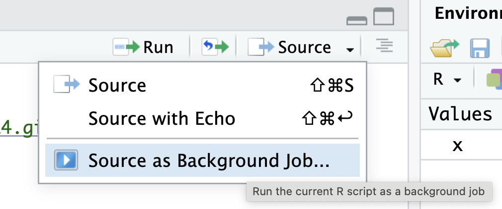

library(tidyverse)
gender_gap <- read_csv("https://soc114.github.io/data/gender_gap.csv")Problem Set 2: Visualization
This problem set draws on the following paper on gender1 equality.
England, Paula, Andrew Levine, and Emma Mishel. 2020. Progress toward gender equality in the United States has slowed or stalled, PNAS 117(13):6990–6997.
Your task is to produce a figure similar to Figure 1 from the paper.

We have simulated data ready for you! We downloaded data from the 1962–2024 Annual Social and Economic Supplement of the Current Population Survey. We then produced estimates and simulated new hypothetical data to share here. Our simulated data has 100 fictional people per sex \(\times\) year subgroup. The simulated data are in gender_gap.csv.
This code will load the data in R:
Summarize the data
Your first task is to aggregate the data to summary statistics. For help, see R4DS Ch 3.5.
- your input is
gender_gap, which has 126,000 rows - you will produce an object named
summarized, which has- 126 rows (one for each sex \(\times\) year subgroup)
- 3 columns:
sex,year, andestimate - The column
estimateis the column you will create, which will contain the summary statistic (proportion employed) in each subgroup
Visualize
Your second task is to visualize. For help with this part, see R4DS Ch 1. Ideally, the input to this part is the summarized object you created above. In case you did not succeed at the first part, here is another summarized file you could use.
# Note: Only use this code if you did not succeed at the first part.
summarized <- read_csv("https://soc114.github.io/data/gender_summarized.csv")Using your summarized data, create the graph.
In your graph, use labs() to:
- modify x- and y-axis titles * The y-axis title should match its values. If your graph has values between 0 and 1, your summary statistic is a proportion. If your graph has values between 0 and 100, your summary statistic is a percent.
- add a plot title
- add a caption
For this question, none of the above should stay at their default values. Choose readable statements that help to clarify what is in the plot. (You Can Use Title Case) or (You can use sentence case). It should not be all lower case.
Then choose at least one of the following:
- change the theme of the graph (making sure it retains the elements above)
- change the colors of the lines
- use
linetypein addition tocolorto distinguish groups
Store your graph in an object called my_plot. This is so we can grade it. The code below gives an example.
my_plot <- ggplot(
data = gender_gap,
mapping = aes()
)Note that when you store a graph in an object, R does not print the graph. To see the graph you’ve stored, run this command.
print(my_plot)We recommend first building your plot (without storing it in my_plot) and then adding the storage part only at the end when you are happy. This way you will always be viewing your current plot.
Test your code before submitting. To make sure your code will run from top to bottom, test it in a clean environment (where you have no packages loaded and no objects existing). One way to do this in RStudio is to click the the down arrow next to the Source button at the top of the script, then click “Source as Background Job.” Then click “Start.” The “Background Jobs” pane will open by your Console, and it will show errors if they appear.

Footnotes
The measure of gender is limited in this study. In social science, sex typically refers to categories assigned at birth (e.g., female, male) while gender is a performed construct with many possible values: man, woman, non-binary, etc. Survey data often contain a variable named “sex” containing the values “male” or “female.” When studying sex/gender disparities over decades of history, this binary categorization is often the only measure available. Researchers often refer to them as “gender” because they are the best available measure that approximates gender. We expect improved measures of gender to become available in the future as quantitative research improves.↩︎